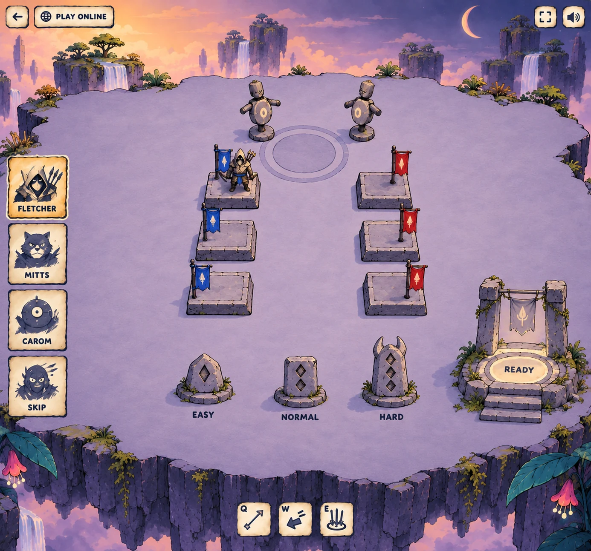

dodgethis / lobby studies
A training isle in two lights.
The current lobby’s top-down three-quarter view, recast as the same weathered stone world as the painted splash. Day keeps a pale court above peach cloud; dusk turns that court lilac against a darker garden. The hero strip uses paper, hand ink and mineral washes.

01 / Day training isle
Butter-green stone, lavender cliff mass, white waterfalls and distant isles. Warm parchment cards carry the splash’s painted UI into the lobby.
Download WebP · 1386 × 1294
02 / Dusk training isle
The same practical training space under violet light. Deep teal leaves and orchid bells frame the rim; the floor stays a clear step lighter than its surround.
Download WebP · 1386 × 1294
What each space does
- Team seatsTwo rows of three low stone plinths: blue at left, red at right. One solid hero occupies a blue seat; the other five are empty.
- SparringTwo stone-and-bark dummies stand at the centre rear. Open floor between the seats leaves room to move and shoot.
- DifficultyThree target steles at the front: one, two or three raised lozenges, with distinct heights. Walk to or shoot Easy, Normal or Hard.
- Ready / startA separate stepped dais and worn gate at lower right. Its pale ready inlay reads as a world destination.
- Hero selection and controlsFour painted cards down the left, small corner chips and Q / W / E at the bottom. Labels remain live UI in the build.
Build from the placement and silhouettes: solid plinths, simple banners, stacked stone, a plain lineless floor and sparse rim plants. These are screen concepts, not imported game scenes or exact collision plans. Click either image for the full view.